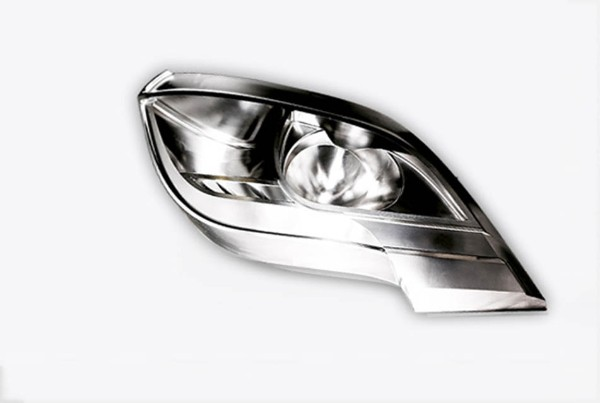
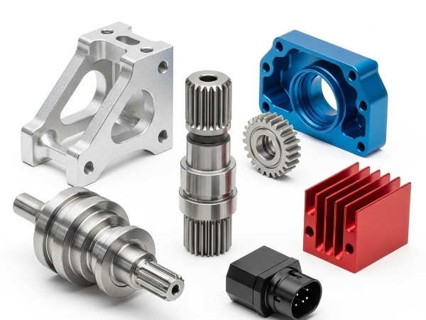
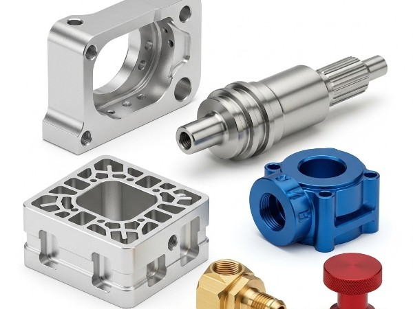
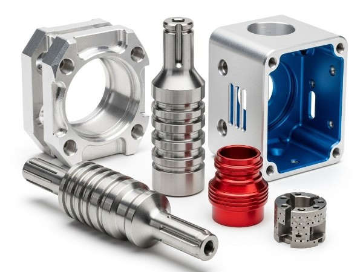
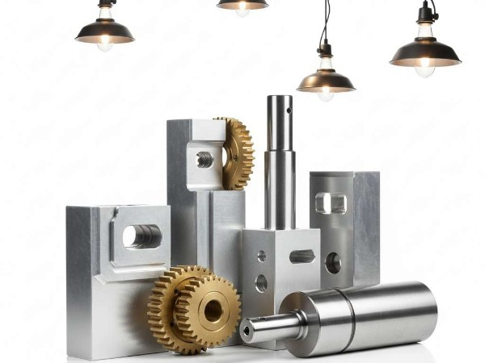
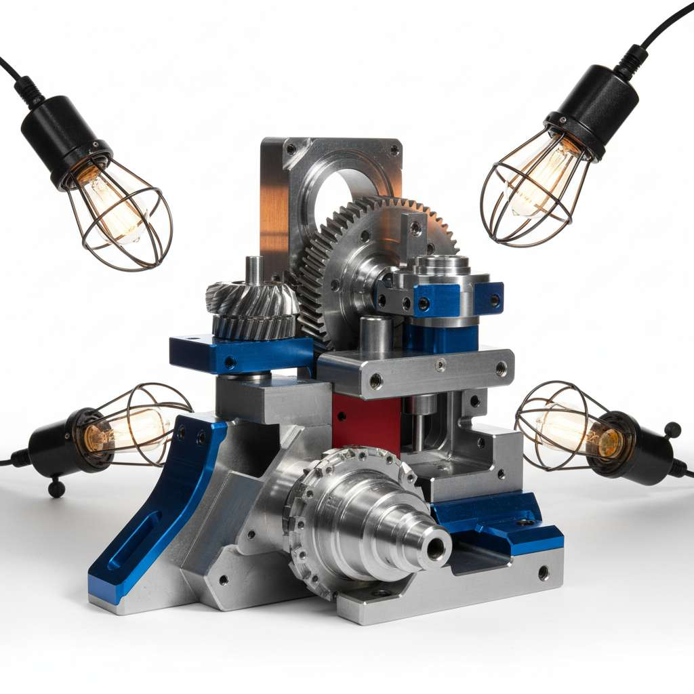
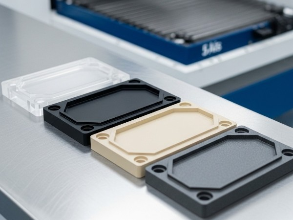
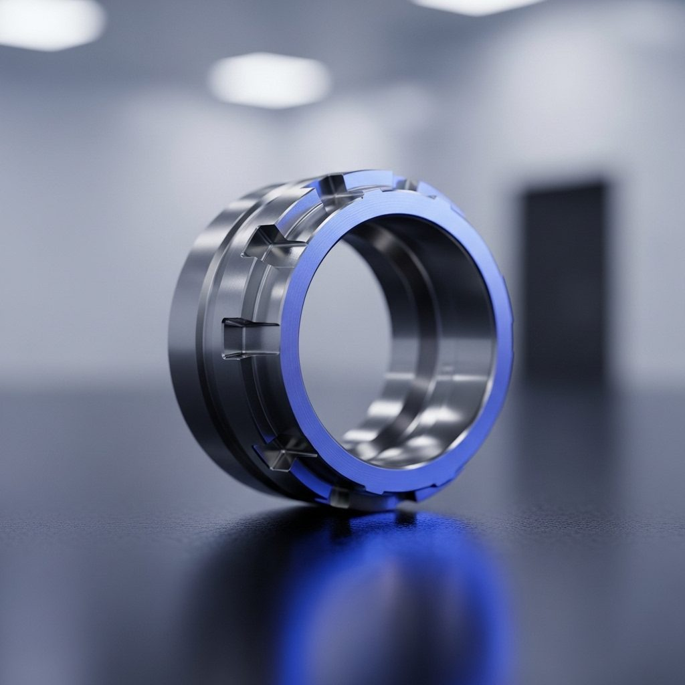

不锈钢是指耐空气、蒸汽、水和酸、碱等化学腐蚀介质的钢合金。不锈钢以其优异的机械性能在数控铣削服务中广受欢迎 ，为大量精密 数控铣削提供 用于手术设备、电子硬件、 汽车的不锈钢零件 、航空航天设备、食品加工机械等行业。专业从事塑料和金属廉价CNC铣削服务和CNC铣削零件制造数十年，在不同的铣削加工方面积累了丰富的经验。熟练的操作人员和专业的工程团队。


410不锈钢——马氏体钢，有磁性，强韧，可热处理
17-4 不锈钢——良好的耐腐蚀性，可硬化至 44 HRC
303不锈钢– 韧性和机械加工性优良，耐腐蚀性比304低。
2205双相不锈钢——最高强度和硬度，可承受高达300℃的温度
440C 不锈钢——可油淬以达到最大硬度并热处理至 58-60 HRC。
420不锈钢——轻度耐腐蚀性、高耐热性和提高强度
316不锈钢——性能与304相似，具有更高的耐腐蚀性和耐化学性
316不锈钢——性能与304相似，具有更高的耐腐蚀性和耐化学性






